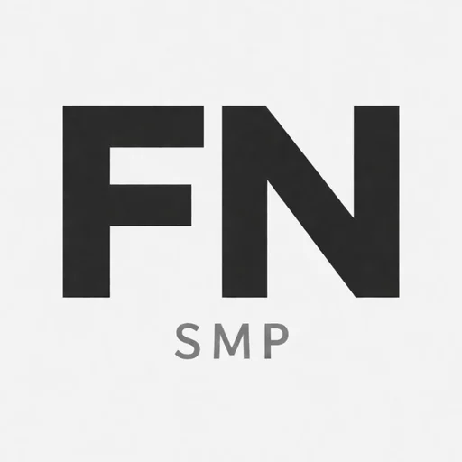

FN SQUAD · MINECRAFT
FN SMP.
A Minecraft survival community run by the FN Squad team, with clear rules, fair moderation and a whitelist. Build something ridiculous, explore somewhere new, and help keep the world welcoming.

Server details
We only publish details the team has confirmed.
FN SMP connection
The address, edition and version have not been published yet. Check back after the FN SMP team confirms them.
How to join
The server uses a whitelist. Applications go through Discord and need real answers.
- Join the FN Squad Discord and read #rules.
- Apply in #whitelist-apply. Answer honestly. Members under 13 can't use Discord.
- Wait for the team to review your application. Staff will contact you through Discord.
- Connect with the confirmed address, edition and version once they are published above.
Server rules
The short version. Staff decisions follow the strike system.
- No hacks, x-ray or exploits. Report bugs!
- No griefing or stealing, even if unlocked.
- PvP only with consent.
- Respect claims. Build 100+ blocks from others.
- No offensive builds, signs or chat.
- One main account. Declare alts.
- Staff decisions follow our strike system. Appeal in Discord within 14 days.
Fair play
No hacked clients, x-ray, fly, kill aura, auto-clickers or macros. Allowed where the server permits: Optifine, Sodium, Iris and minimaps without entity or cave radar. Don't exploit bugs or glitches; report them to staff. Using a known dupe breaks the rules, and reporting one is rewarded. No lag machines or chunk-loading abuse, and no alts to farm resources or bypass punishments.
Griefing and theft
No breaking, stealing from, burning, flooding or altering another player's builds, claims or storage. No stealing from chests, farms or bases, even unlocked ones. Trades must be clear and agreed. No trapping, spawn-killing or harassment. Respect claims, and if land isn't claimed, build at least 100 blocks from existing bases unless the owner agrees.
PvP
Survival is PvE by default. PvP is allowed only with mutual consent or in designated arenas. Killing without consent is treated as harassment on a first offence and as a strike on repeats.
Building and chat
No offensive builds or signs (hate symbols, slurs, sexual builds, drug imagery, political attacks). Keep spawn public and tidy, replant trees and fill big holes. Chat with neighbours before large builds. The community Code of Conduct applies in-game and on Discord, and advertising other servers isn't allowed.
Accounts
One main account per person; declare any alts to staff. Never share your password. Staff will never ask for it.
Inactivity and claims
Players inactive for 60 days are marked inactive. Claims may be released after 90 days with a warning in Discord. On a break for exams or work? Ask staff to hold your claim. Reclaimed builds are protected or moved, not destroyed, whenever possible.
How staff handle reports
Staff look at logs and other evidence before acting, aim for at least two pieces of evidence for griefing or cheating, and never punish on rumours alone. Bans can be appealed through the Discord form within 14 days. A different staff member reviews it, and that decision is final.
Good questions
Do I need mods?
That depends on the server mode, which the team will announce. A Semi-Vanilla server needs no mods. A modded server needs one exact modpack and version.
Is it pay-to-win?
No. Donations are optional and go to running costs first. Perks, if any, are cosmetic or convenience only. We never sell in-game items, claims or rule exceptions.
Which edition and version is it?
Not announced yet. We'll publish the confirmed edition and version in the server details above.